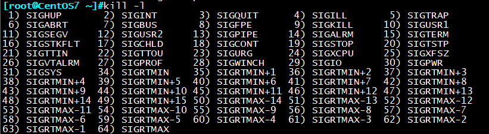

一、进程相关概念：
进程是正在运行的程序实体，并且包括这个运行的程序中占据的所有系统资源，比如说CPU，IO,内存，网
络资源等。通过学习Linux系统进程管理来协调多道程序之间的关系，使CPU得到充分的利用。
进程和程序的区别是什么？
进程是一个动态的概念，当用户把一个程序或命令执行起来的时候，才有进程的概念，
系统会自动分配一个编号PID给进程。
程序是一个静态的概念，表现为一个文件
进程的分类：
根据进程与系统终端的关系：
（1）守护进程：在系统引导过程中启动的进程，即跟终端无关的进程。
（2）前台进程：跟终端相关，通过终端启动的进程；
注：守护进程和前台进程可相互转化
根据进程占用资源的多少分为：
（1）CPU密集型：对cpu占用率高的进程
（2）IO密集型：占用磁盘读写高的进程
进程的状态：
进程在被内核调度过程中的状态可分为很多种：
1.运行态：running 进程正在运行中
2.就绪态：ready
3.睡眠态：sleeping
可中断睡眠：interruptible 大部分进程处于此状态，随时可唤醒
不可中断睡眠：uninterruptible
4.僵尸态：zombie 找不到归属的进程，或父进程已不存在
5.停止态：stopped 不可被调度并运行
进程优先级
进程优先级：
系统优先级：数字越小，优先级越高
0-139（CentOS4,5）
各有140个运行队列和过期队列
0-98，99（CentOS6）
实时优先级: 99-0 值最大优先级最高
nice值：-20到19，对应系统优先级100-139或99
Big O：时间复杂度，用时和规模的关系（越往左越好）
O(1), O(logn), O(n)线性, O(n^2)抛物线, O(2^n)
进程内存：
Page Frame: 页框，用存储页面数据，存储Page 4k
LRU：Least Recently Used 近期最少使用算法,释放内存
物理地址空间和线性地址空间
MMU：Memory Management Unit负责转换线性和物理地址
TLB:Translation Lookaside Buffer 翻译后备缓冲器,用于保存虚拟地址和物理地址
映射关系的缓存
IPC: Inter Process Communication
同一主机: signal:信号
shm: shared memory
semaphore:信号量，一种计数器
不同主机：socket: IP和端口号
RPC: remote procedure call 远程过程调用
MQ：消息队列，Kafka，ActiveMQ
二、信号操作管理
我们指定同一主机间的程序是通过信号来进行通讯的，那么我们也可以通过发送信号的方式对进程进行管
理。
使用kill -l 命令可以查看当前支持的信号类型：

信号的表示方式：
（1）数字表示：1,2,9
（2）完整名称：SIGHUP
（3）简写名称：HUP
Linux系统支持的型号类型多达60余种，常用信号类型有：
SIGHUP：1，无须关闭进程而让其重新读取配置文件，使新配置生效
SIGINT：2，打断正在运行中的进程，相当于Ctrl+c
SIGQUIT：3，相当Ctrl+\
SIGKILL：9，强制杀死正在运行的进程
SIGTERN：15，终止正在运行的进程（kill命令默认信号）
SIGCONT：18，继续运行指定进程
SIGSTOP：19，后台休眠
信号管理命令
常用的信号管理命令有kill，killall，pkill：
kill命令可用来向进程发送信号指令，以及显示当前系统可用的信号
kill发送信号格式：
kill [-SIGNAL] PID
如：kill -9 123 强制杀死PID为123的进程
killall发送信号格式：
killall [-SIGNAL] PROCESS
如：kill -9 sleep 强制杀死sleep进程
注意：kill命令跟PID，killall命令跟进程名
pkill发送信号格式：
pkill [options] pattern
options：
-SIGNAL
-u uid 生效者
-U uid 真正发起运行命令者
-t terminal 与指定终端相关的进程
-P pid 显示指定进程的子进程
如：pkill -9 -t tty2 强制杀死tty2终端下的所有进程
三、作业管理（job control）
我们知道，在登录系统后每一个工作进程都是当前bash的子进程，通过作业管理我们可以
实现多个进程同时运行，这里我们要涉及到两个新的名词：前台作业和后台作业
前台作业：通过终端前，且启动后一直占据终端
后台作业：可通过终端启动，但启动后即转入后台运行（释放前端）
作业状态切换：
作用运行一共有三种状态，分别为：前台执行、后台执行与后台休眠（stoped）
jobs命令 显示当前作业编号以及作业状态
让作业运行于后台：
（1）尚未启动的作业：COMMAND &
（2）运行中的作业：Ctrl+z，后台休眠状态
将后台休眠|运行作业调回前台运行：
fg job_num 将作业在前台运行（foreground）
将后台休眠作业执行后台运行：
bg job_num 将作业在后台运行（background）
关闭后台执行：
（1）fg job_num；ctrl+c
（2）kill %job_num
并行运行
同时运行多个进程，提高效率
方法1：
利用脚本
vi all.sh
f1.sh&
f2.sh&
f3.sh&
方法2：
(CMD1&);(CMD2&);(CMD3&)
方法3：
{ CMD1& CMD2& CMD3& }
执行长时间任务时防止网络中断造成操作中断
方法1：剥离命令与终端的联系，终端中断后进程将转移至1进程上，再恢复
nohup COMMAND &>/dev/null &
方法2：开启一个screen会话，重新进入后screen -r即可恢复
screen；COMMAND；screen -r 恢复
四、Linux进程管理常用命令
进程的管理命令有：
pstree、ps、pidof、pgrep、pkill、pmap、kill、killall、job、bg、fg等
进程的管理工具：
top、htop、vmstat、dstat、iostat、glances等（下节介绍）
ps 显示进程状态
BSD选项：
a 所有终端中的进程
x 不连接终端的进程
u 显示进程所有者的信息
f 显示进程树
k|–sort 属性 对属性排列，属性前加-表示倒序
L 显示支持的属性
显示PID,tty，cmd，cpu占用率，内存占用列表，并按%mem排序
ps xo pid,tty,cmd,%cpu,%mem –sort %mem
ps xo pid,tty,cmd,%cpu,%mem k%mem
按%cpu排序，“-”表示倒序
ps xo pid,tty,cmd,%cpu,%mem –sort -%cpu
短选项：
-e 显示所有进程
-f 显示完整格式程序信息
-F 显示更完整格式的进程信息
-C 查看指定CMD或脚本的进程，多个命令用“，”分开
显示PID，命令，pri优先级（数字越大，优先级越高），nice优先级，realtime优先级
ps xo pid,cmd,pri,nice,rtprio
根据进程编号查询CMD命令
ps -p 3245 -o comm= 查找PID3245对应的命令名称
ps -C sleep -o pid= 根据命令查找pid
常用组合：
ps aux 显示所有进程的详细信息
ps -ef 类似于aux，缺少cpu%，mem%
ps -eF
pstree 显示进程树
-p 显示PID
-h 高亮标注当前使用的进程
pgrep 进程搜索命令，支持正则表达式
格式：pgrep [options] pattern
options：
-u uid effective user,生效者
-U uid real user，真正发起运行命令者
-t terminal 与指定终端相关的进程
-l 显示进程名
-a 显示完整格式的进程名
-P pid 显示指定进程的子进程
pidof 查找正在运行进程的PID
如：pidof bash 显示bash进程的PID
uptime 命令
显示当前时间，系统已启动时间，当前上线人数，系统平均负载（1、5、10分钟，一般不超过1）
free 显示内存空间使用状态
options
-b 以字节为单位
-m 以MB为单位
-g 以GB为单位
-h 人类已读格式
pmap 比较专业的查看内存与进程对应关系工具
pmap 12 查看进程号12的内存与进程对应关系
-x 显示详细格式的信息